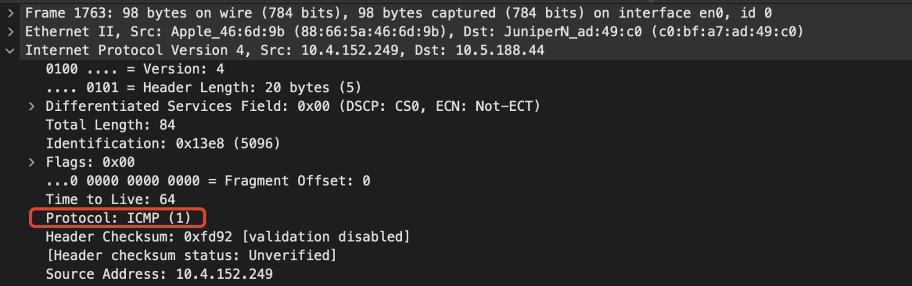

ICMP协议及应用
在日常的运维工作中，我们经常判断网络是否联通、两个端点之间的延迟等，使用最多的命令就是 ping、traceroute、mtr等， 这些工具都是基于ICMP协议来实现的。
ICMP 全称是 Internet Control Message Protocol，也就是互联网控制报文协议。
控制报文协议ICMP是一个差错报告机制，属于网络层协议，主要用于在IP主机和路由器之间传递控制消息，收集各种网络信息，对于诊断和排除各种网络故障以及用户数据的传递具有至关重要的作用。
虽然 ICMP 是网络层协议，但是它不像 IP 协议和 ARP 协议一样直接传递给数据链路层，而是先封装成 IP 数据包然后再传递给数据链路层。
在 IP 数据包中如果协议类型字段的值是 1 的话，就表示 IP 数据是 ICMP 报文。
图：抓包示例一个ICMP报文
